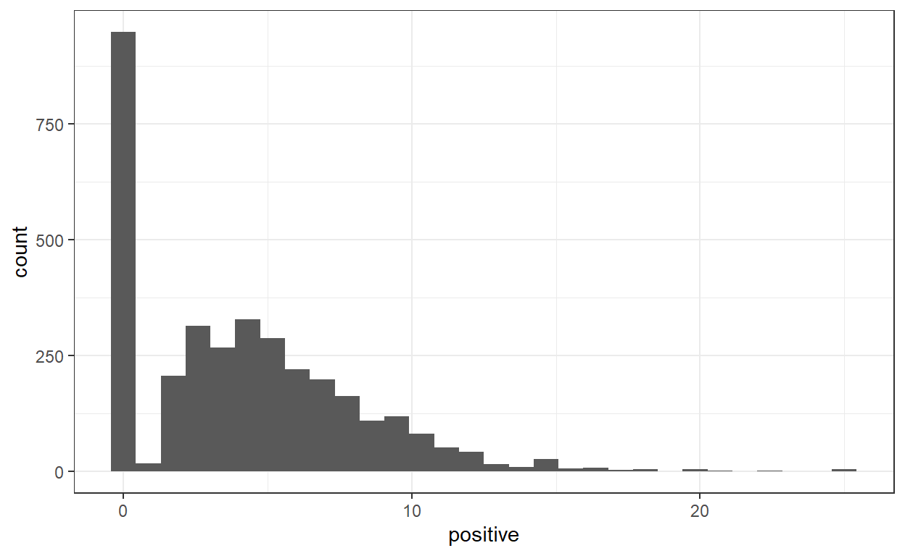

Getting Started
I am beginning to pull in the text collection that I will be analyzing for my final project in the course. I started pulling articles by month beginning January 2020 through December 2021. For my initial text collection, I am collecting articles using the New York Times API for the search query “Afghanistan”. I am not limiting my search by any filter at this time. However, I am limited in that the article search API for the New York Times does not pull the entire article; rather, I have been able to pull the abstract/summary, lead paragraph, and snippet for each article as well as the keywords, authors, sections, and url. In addition, I can get the article titles for both the print and online versions of the article.
To pull the data, I had to reduce the queries into more workable groups that would not time out, given the NYT API limits. I was able to pull the 3,442 articles by year (2020, then 2021 in two parts), then assemble them into a dataframe. I will not run the code in this post, as it was already run and is an exhaustive process.
# For articles from 2020
#url2020 <- ('https://api.nytimes.com/svc/search/v2/articlesearch.json?begin_date=20200101&end_date=20201231&q=afghanistan&api-key=GTp3efxVZiGO75Iox9uZJ8ZTjIMjDWsM')
#query2020 <- fromJSON(url2020)
#max.pages2020 <- ceiling((query2020$response$meta$hits[1] / 10)-1)
#pages2020 <- list()
#for(i in 0:max.pages2020){
#search2020 <- fromJSON(paste0(url2020, "&page=", i), flatten = TRUE) %>% data.frame()
#message("Retrieving page ", i)
#pages2020[[i+1]] <- search2020
#Sys.sleep(10)
#}
#pages2020[[i+1]] <- search2020
#afghanistan.articles.2020 <- rbind_pages(pages2020)
#save(afghanistan.articles.2020,file="afghanistan_articles_2020.Rdata")
# For January to August 2021
#url2021a <- ('https://api.nytimes.com/svc/search/v2/articlesearch.json?begin_date=20210101&end_date=20210831&q=afghanistan&api-key=GTp3efxVZiGO75Iox9uZJ8ZTjIMjDWsM')
#query2021a <- fromJSON(url2021a)
#max.pages2021a <- ceiling((query2021a$response$meta$hits[1] / 10)-1)
#pages2021a <- list()
#for(i in 0:max.pages2021a){
#search2021a <- fromJSON(paste0(url2021a, "&page=", i), flatten = TRUE) %>% data.frame()
#message("Retrieving page ", i)
#pages2021a[[i+1]] <- search2021a
#Sys.sleep(10)
#}
#pages2021a[[i+1]] <- search2021a
#afghanistan.articles.2021a <- rbind_pages(pages2021a)
#save(afghanistan.articles.2021a,file="afghanistan_articles_2021a.Rdata")
# For September-December 2021
url2021b <- ('https://api.nytimes.com/svc/search/v2/articlesearch.json?begin_date=20210901&end_date=20211231&q=afghanistan&api-key=GTp3efxVZiGO75Iox9uZJ8ZTjIMjDWsM')
#query2021b <- fromJSON(url2021b)
#max.pages2021b <- ceiling((query2021b$response$meta$hits[1] / 10)-1)
#pages2021b <- list()
#for(i in 0:max.pages2021b){
#search2021b <- fromJSON(paste0(url2021b, "&page=", i), flatten = TRUE) %>% data.frame()
#message("Retrieving page ", i)
#pages2021b[[i+1]] <- search2021b
#Sys.sleep(10)
#}
#pages2021b[[i+1]] <- search2021b
#afghanistan.articles.2021b <- rbind_pages(pages2021b)
#save(afghanistan.articles.2021b,file="afghanistan_articles_2021b.Rdata")
# Create shell for data
#afghanistan.articles.all <- c()
#afghanistan.articles.all <- rbind_pages(c(pages2020, pages2021a, pages2021b))
After compiling the data, I re-formatted the date column and saving the formatted tibble for offline access.
#afghanistan.articles.table<- as_tibble(cbind(
#date=afghanistan.articles.all$response.docs.pub_date,
#abstract=afghanistan.articles.all$response.docs.abstract,
#lead.paragraph=afghanistan.articles.all$response.docs.lead_paragraph,
#snippet=afghanistan.articles.all$response.docs.snippet,
#section.name=afghanistan.articles.all$response.docs.section_name,
#subsection.name=afghanistan.articles.all$response.docs.subsection_name,
#news.desk=afghanistan.articles.all$response.docs.news_desk,
#byline=afghanistan.articles.all$response.docs.byline.original,
#headline.main=afghanistan.articles.all$response.docs.headline.main,
#headline.print=afghanistan.articles.all$response.docs.headline.print_headline,
#headline.kicker=afghanistan.articles.all$response.docs.headline.kicker,
#material=afghanistan.articles.all$response.docs.type_of_material,
#url=afghanistan.articles.all$response.docs.web_url
#))
#afghanistan.articles.table$date <- substr(afghanistan.articles.table$date, 1, nchar(afghanistan.articles.table$date)-14)
#afghanistan.articles.table$date <- as.Date(afghanistan.articles.table$date, "%Y-%m-%d")
#save(afghanistan.articles.table,file="afghanistan.articles.table.Rdata")
#write.table(afghanistan.articles.table, file = "~/GitHub/DACSS.697D/Text as Data Spring22/afghanistan.articles.table.csv", sep=",", row.names=FALSE)
Initial data collection complete!
Now to the active review of the data. Loading the data from my collection phase:
load("afghanistan.articles.table.RData")
afghanistan_lead <- read.csv("lead.paragraph.table.csv")
afghanistan_articles <- as.data.frame(afghanistan_lead)
Creating a corpus of the lead paragraphs of each article
afghanistan_corpus <- corpus(afghanistan_articles)
afghanistan_summary <- summary(afghanistan_corpus)
afghanistan_summary
Corpus consisting of 3442 documents, showing 100 documents:
Text Types Tokens Sentences doc.id date section.name
text1 32 40 1 1 1/1/2020 Today’s Paper
text2 23 26 1 2 1/2/2020 Arts
text3 109 170 9 3 1/2/2020 Magazine
text4 49 56 1 4 1/3/2020 Business Day
text5 23 25 3 5 1/3/2020 Magazine
text6 46 60 3 6 1/3/2020 Obituaries
text7 43 55 3 7 1/3/2020 Opinion
text8 48 64 2 8 1/3/2020 Opinion
text9 41 51 1 9 1/3/2020 U.S.
text10 31 35 1 10 1/3/2020 U.S.
text11 38 45 2 11 1/3/2020 World
text12 11 11 1 12 1/4/2020 Opinion
text13 36 45 4 13 1/4/2020 Opinion
text14 57 68 3 14 1/4/2020 U.S.
text15 27 29 1 15 1/4/2020 U.S.
text16 54 61 2 16 1/4/2020 U.S.
text17 33 37 1 17 1/4/2020 World
text18 47 51 1 18 1/4/2020 World
text19 21 24 1 19 1/4/2020 World
text20 32 42 3 20 1/5/2020 Opinion
text21 41 56 2 21 1/5/2020 U.S.
text22 26 28 1 22 1/5/2020 World
text23 14 14 2 23 1/6/2020 Briefing
text24 14 14 2 24 1/6/2020 Briefing
text25 10 11 1 25 1/6/2020 Magazine
text26 62 76 3 26 1/6/2020 Opinion
text27 4 4 1 27 1/6/2020 Opinion
text28 24 24 1 28 1/6/2020 U.S.
text29 35 45 2 29 1/6/2020 U.S.
text30 33 34 1 30 1/6/2020 World
text31 56 67 2 31 1/6/2020 World
text32 42 55 1 32 1/7/2020 Arts
text33 42 54 1 33 1/7/2020 Business Day
text34 46 61 2 34 1/7/2020 New York
text35 69 91 4 35 1/7/2020 Opinion
text36 63 78 2 36 1/7/2020 Opinion
text37 59 79 4 37 1/7/2020 U.S.
text38 43 47 1 38 1/7/2020 U.S.
text39 40 44 1 39 1/7/2020 World
text40 18 18 1 40 1/8/2020 Opinion
text41 30 35 2 41 1/8/2020 Opinion
text42 41 43 1 42 1/8/2020 Opinion
text43 45 50 1 43 1/8/2020 U.S.
text44 15 17 1 44 1/8/2020 U.S.
text45 52 61 3 45 1/8/2020 U.S.
text46 41 49 3 46 1/8/2020 U.S.
text47 34 38 1 47 1/8/2020 World
text48 35 40 1 48 1/8/2020 World
text49 32 36 1 49 1/8/2020 World
text50 41 47 3 50 1/8/2020 World
text51 29 35 3 51 1/8/2020 World
text52 13 13 1 52 1/8/2020 World
text53 42 49 2 53 1/8/2020 World
text54 111 171 10 54 1/9/2020 Magazine
text55 54 76 4 55 1/9/2020 Opinion
text56 4 4 1 56 1/9/2020 Opinion
text57 34 37 2 57 1/9/2020 Style
text58 39 46 2 58 1/9/2020 U.S.
text59 42 63 3 59 1/9/2020 World
text60 39 41 1 60 1/9/2020 World
text61 79 105 5 61 1/10/2020 Opinion
text62 42 49 1 62 1/10/2020 U.S.
text63 25 28 1 63 1/10/2020 U.S.
text64 54 72 3 64 1/10/2020 U.S.
text65 26 28 1 65 1/10/2020 U.S.
text66 35 42 1 66 1/10/2020 World
text67 34 42 1 67 1/10/2020 World
text68 35 50 2 68 1/11/2020 World
text69 38 40 1 69 1/11/2020 World
text70 33 40 3 70 1/12/2020 World
text71 44 51 1 71 1/12/2020 World
text72 32 36 2 72 1/13/2020 Books
text73 14 14 2 73 1/13/2020 Briefing
text74 14 14 2 74 1/13/2020 Briefing
text75 10 11 1 75 1/13/2020 Opinion
text76 10 11 1 76 1/13/2020 Opinion
text77 56 70 2 77 1/13/2020 U.S.
text78 39 47 1 78 1/13/2020 World
text79 10 10 1 79 1/14/2020 Opinion
text80 4 4 1 80 1/14/2020 Opinion
text81 41 51 2 81 1/14/2020 U.S.
text82 41 51 2 82 1/14/2020 U.S.
text83 39 41 1 83 1/14/2020 World
text84 45 62 3 84 1/15/2020 Arts
text85 110 157 7 85 1/15/2020 Arts
text86 65 93 3 86 1/15/2020 Food
text87 66 92 2 87 1/15/2020 Magazine
text88 52 70 4 88 1/15/2020 Opinion
text89 52 70 4 89 1/15/2020 Opinion
text90 10 11 1 90 1/15/2020 Opinion
text91 11 11 1 91 1/15/2020 Opinion
text92 18 20 2 92 1/15/2020 The Learning Network
text93 35 38 1 93 1/15/2020 U.S.
text94 34 41 1 94 1/15/2020 U.S.
text95 33 39 1 95 1/15/2020 U.S.
text96 37 37 1 96 1/15/2020 U.S.
text97 43 50 2 97 1/15/2020 U.S.
text98 42 48 2 98 1/15/2020 U.S.
text99 10 11 1 99 1/16/2020 Opinion
text100 11 12 1 100 1/16/2020 Opinion
news.desk
Summary
Weekend
Magazine
Business
Magazine
Foreign
OpEd
OpEd
Politics
Washington
Foreign
OpEd
OpEd
Washington
Express
Washington
Washington
Foreign
Foreign
OpEd
Politics
Foreign
NYTNow
NYTNow
Magazine
OpEd
Letters
Washington
Washington
Washington
Washington
Culture
Business
Metro
OpEd
OpEd
National
Washington
Washington
OpEd
Editorial
OpEd
Washington
Washington
Washington
Washington
Foreign
Washington
Foreign
Express
Foreign
Foreign
Foreign
Magazine
OpEd
Letters
Styles
Washington
Foreign
Washington
OpEd
National
Politics
National
Politics
Foreign
Foreign
Foreign
Express
Foreign
Foreign
BookReview
NYTNow
NYTNow
OpEd
OpEd
Politics
Foreign
Editorial
Letters
Politics
Politics
Foreign
Culture
Culture
Dining
Magazine
OpEd
OpEd
Editorial
Editorial
Learning
Washington
Washington
Washington
Politics
National
Politics
Editorial
Editorial
byline
<NA>
By Mike Hale
By Fahim Abed and Fatima Faizi
By Ben Dooley and David Yaffe-Bellany
By C. J. Chivers
By Tim Arango, Ronen Bergman and Ben Hubbard
By Timothy Egan
By Barbara Slavin
By Alexander Burns
By Catie Edmondson
By Steven Erlanger
By Susan E. Rice
By Thomas L. Friedman
By Zach Montague
By Mariel Padilla
By Catie Edmondson
By Mark Mazzetti
By Hari Kumar and Maria Abi-Habib
By David D. Kirkpatrick
By Ryan C. Crocker
By Reid J. Epstein
<NA>
By Melina Delkic
By Chris Stanford
By David Marchese
By Azadeh Moaveni
<NA>
By Lara Jakes
By Jennifer Steinhauer
By Thomas Gibbons-Neff
By Lara Jakes
By Jason Farago
By Michael M. Grynbaum
By Kimiko de Freytas-Tamura
By Elizabeth Cobbs and Kimberly C. Field
By Ross Douthat
By Dave Philipps
By Peter Baker and Maggie Haberman
By Alissa J. Rubin, Farnaz Fassihi, Eric Schmitt and Vivian Yee
By Nicholas Kristof
By The Editorial Board
By Thomas L. Friedman
By Julian E. Barnes, Catie Edmondson, Thomas Gibbons-Neff and Rukmini Callimachi
By The New York Times
By Annie Karni and Maggie Haberman
By Linda Qiu
By Mujib Mashal
By Helene Cooper and Eric Schmitt
By Alissa J. Rubin
By Jacey Fortin
By Dan Bilefsky and Ian Austen
By Mark Landler
By The New York Times
By Robert F. Worth
By Farhad Manjoo
<NA>
By Caity Weaver and Elizabeth Paton
By Jennifer Steinhauer
By Sarah Lyall
By David E. Sanger
By Tom Cotton
By Dave Philipps
By Giovanni Russonello
By Dave Philipps and Tim Arango
By Jeremy W. Peters
By Salman Masood and Zia ur-Rehman
<NA>
By Fahim Abed
By Karen Zraick
By Thomas Gibbons-Neff and Fahim Abed
By Ruth Maclean
<NA>
By Victoria Shannon and Hiroko Masuike
By Melina Delkic
By The Editorial Board
By The Editorial Board
By Jeremy W. Peters
By Farnaz Fassihi and Ben Hubbard
By The Editorial Board
<NA>
By Reid J. Epstein and Katie Glueck
By Reid J. Epstein and Katie Glueck
By Helene Cooper
By Farah Nayeri
By Gabe Cohn
By Besha Rodell
By John Ismay
By Thomas L. Friedman
By Thomas L. Friedman
By The Editorial Board
By The Editorial Board
By Jeremy Engle
By Katie Rogers
By Catie Edmondson
By The New York Times
By David E. Sanger
By Tim Arango and Neil MacFarquhar
By Maggie Astor
By The Editorial Board
By The Editorial Board
headline.main
Quotation of the Day: Ex-SEAL Now Pitching Products and President
The 50 TV Shows You Need to Watch This Winter
Afghan War Casualty Report: January 2020
Carlos Ghosn Was Aided in Flight From Japan by Former Green Beret
A History of War in Six Drugs
Qassim Suleimani, Master of Iran’s Intrigue, Built a Shiite Axis of Power in Mideast
The Case for a One-Term Joe
Qassim Suleimani’s Killing Will Unleash Chaos
Airstrike Pushes National Security to Forefront of 2020 Race
Congressional Leaders Call for Details After U.S. Airstrike on Suleimani
Suleimani’s Gone, and the Iran Nuclear Deal May Be Next
The Dire Consequences of Trump’s Suleimani Decision
Trump Kills Iran’s Most Overrated Warrior
Pence Links Suleimani to 9/11. The Public Record Doesn’t Back Him.
Antiwar Protesters Across U.S. Condemn Killing of Suleimani
With Split Decision on Impeachment, Maine Democrat Risks a Dual Backlash
In Era of Perpetual Conflict, a Volatile President Grabs Expanded Powers to Make War
Muslims Organize Huge Protests Across India, Challenging Modi
Conflict With Iran Threatens Fight Against ISIS
The Long Battle With Iran
Buttigieg’s Bet: After Iran Strike, Military Experience Matters Even More
Outrage in Iran After Killing of Suleimani: Here’s What You Need to Know
Iran, Australia Fires, Taiwan election: Your Tuesday Briefing
Iran, Golden Globes, Harvey Weinstein: Your Monday Briefing
Will Hurd Wants to Improve the Republican Brand
The Day After War Begins in Iran
A Threat to Iran’s Rich Cultural Heritage
John Bass, U.S. Envoy to Afghanistan, Steps Down on Cusp of New Peace Deal
Fox Host’s ‘America First’ Shift Makes an Exception for Trump’s Iran Strike
How U.S. Troops Are Preparing for the Worst in the Middle East
Defenders of History Take Aim at Trump’s Threat to Strike Iran’s Cultural Sites
Targeting Cultural Sites in War Is Illegal. It’s Also Barbaric.
Tucker Carlson Dissents as Right-Wing Media Weighs Trump’s Iran Strike
Just 700 Speak This Language (50 in the Same Brooklyn Building)
Why Did the U.S. Kill Suleimani?
Andrew Jackson in the Persian Gulf
He Fled Iran as a Child. Now He’s Commanding a U.S. Aircraft Carrier.
Pentagon Rules Out Striking Iranian Cultural Sites, Contradicting Trump
Iran Fires on U.S. Forces at 2 Bases in Iraq, Calling It ‘Fierce Revenge’
Trump Has a Bizarre Idea of Winning
Can Trump Make Foreign Policy a Democratic Campaign Issue?
Did Trump and Iran Just Bury the Hatchet, or the Future?
Pressed for Details on Suleimani Strike, Trump Administration Gives Few
Full Transcript: President Trump’s Address on Iran
Suleimani’s Killing Creates New Uncertainty for Trump Campaign
Trump’s Inaccurate Statements About the Conflict With Iran
As Iran and U.S. Trade Blows, Afghanistan Sweats Between the 2 Powers
At the Edge of a War, the U.S. and Iran Appear to Step Back
Missile Strike Damage Appears Limited, but Iran May Not Be Done
The Ukraine Plane Crash in Iran: Black Boxes and Other Questions
Iran Plane Crash Victims Came From at Least Seven Countries
Prince Harry and Meghan to ‘Step Back’ From Royal Duties in Extraordinary Retreat
Confrontation in Congress Looms Over Iran Conflict
Mohammed bin Zayed’s Dark Vision of the Middle East’s Future
We Really Must Stop Starting Wars
In the Mideast, U.S. Foreign Policy Gone Awry
Prince Harry and Meghan Stepping Back, Explained
Weary Veterans Exemplify a Nation Reluctant for War With Iran
For Prince Harry and His Wife, Meghan, a Tricky Balancing Act
Trump’s Iran Strategy: A Cease-Fire Wrapped in a Strategic Muddle
The Case for Killing Qassim Suleimani
Army Denies Request by Soldier Pardoned by Trump, Setting Up Showdown
How the Public Feels About Trump’s Iran Strategy
Who Signs Up to Fight? Makeup of U.S. Recruits Shows Glaring Disparity
Why Pete Buttigieg Has Made Religion Central to His Campaign
Bomb Blast Claimed by ISIS Kills at Least 15 in Pakistan Mosque Used by Taliban
In Plane Crash, a Day of Blame: Ukraine Weighs In and Iran Mulls Announcement
Two U.S. Service Members Killed in Afghanistan
Jet Crash in Iran Has Eerie Historical Parallel
A Growing U.S. Base Made This Afghan Town. Now It’s Dying.
France Summons African Leaders, Threatening Troop Pullout
‘Tightrope: Americans Reaching for Hope,’ by Nicholas D. Kristof and Sheryl WuDunn: An Excerpt
Oscars, Iran, College Football: Your Monday Evening Briefing
Iran Protests, Harry and Meghan, Australia Fires: Your Tuesday Briefing
Tom Steyer’s Top Priority Isn’t Climate Change
Bernie Sanders Wants to Change Your Mind
Trump’s Iran Strategy May Cost Him in 2020 Election
Iran Protests Rage Over Downed Jet, as Lawmakers Demand Accountability
Cory Booker Has More to Say
An Aide’s View: Jimmy Carter as ‘the Anti-Trump’
6 Takeaways From the January 2020 Democratic Debate
6 Takeaways From the January 2020 Democratic Debate
Plan to Cut U.S. Troops in West Africa Draws Criticism From Europe
In Afghanistan, Being an Artist Is a Dangerous Job
What’s on TV Wednesday: An Adventure Series and ‘68 Whiskey’
Looking Toward a New Era of Australian Cuisine
A Myth That Won’t Die About a Gulf War Weapon, and Why It Matters
Trump’s Code of Dishonor
Trump’s Code of Dishonor
Amy Klobuchar on Plans vs. Pipe Dreams
Andrew Yang Is Listening
Would You Consider Serving in the U.S. Armed Forces?
Pence Observes Transfer of Remains of 2 Soldiers Killed in Afghanistan
Jason Crow: Impeachment Manager Who Pressed to Launch Inquiry
Fact-Checking the January Democratic Debate
The Democrats All Disagree With Trump on Iran. Then It Gets Mushy.
Grief and Fear in Sacramento Over a Death That Set the World on Edge
Who Won the Debate? Experts Weigh In
Pete Buttigieg Says He’s More Than a Résumé
Deval Patrick Says the Race Is Just Getting Started
headline.print
Quote of the Day
50 TV Shows To Watch This Winter
<NA>
A Green Beret and a Turkish Jet Company Aided in a Stunning Escape
<NA>
A Mastermind Of Iran’s Clout In the Mideast
The Case for a One-Term President Biden
<NA>
Airstrike Pushes Foreign Policy To Front of Presidential Race
Majority Leader Says a Briefing for the Senate Is Scheduled for Next Week
U.S. Strike May Have Dealt a Fatal Blow to Nuclear Deal
The Fallout of Killing Suleimani
<NA>
<NA>
<NA>
With Split Vote on Impeachment, Maine Democrat Risks Dual Backlash
More Powers, Few Limits And a Volatile President
Huge Protests in India Keep Steadfast Pressure on Modi
As Tehran and Washington Stare Each Other Down, ISIS Stands to Gain
<NA>
Buttigieg’s Bet: After Iran Strike, a Military Past Matters Even More
<NA>
<NA>
<NA>
Will Hurd Wants to Improve the Republican Brand
<NA>
A Threat to Iran’s Rich Cultural Heritage
U.S. Envoy to Afghanistan Is Stepping Down
Fox Host Is ‘America First,’ but Makes Exception for Trump’s Iran Strike
U.S. Troops Preparing for Worst in Mideast
‘You Can’t Just Start Shooting Anything You Want’
In Targeting Cultural Sites, a Threat to Global Values
The Prospect of a New Military Conflict Divides Right-Wing Pundits
Carefully Nourishing a Dying Language
<NA>
<NA>
He Once Fled Iran. Now He Leads an American Crew.
Pentagon Rules Out Strikes on Antiquities
Iranians Attack U.S. Forces in Iraq in Act of Revenge
Trump Has A Bizarre Idea Of Winning
Foreign Policy Should Matter to Voters
<NA>
Democrats Press for Details on Threats Cited by Trump
U.S. ‘Is Ready to Embrace Peace With All Who Seek It’
Iranian’s Killing Delivers Jolt of Uncertainty to Trump Campaign Strategy
References In Address To 2013 Deal Had Holes
Washington-Tehran Friction Casts Spotlight on Afghanistan’s Vulnerabilities
While Threat of War May Have Receded, It Hasn’t Disappeared
<NA>
<NA>
Victims Included Citizens From at Least 7 Countries
In Stunning Step, Duke and Duchess Seek New Title: Part-Timers
<NA>
The M.B.Z. Moment
<NA>
In the Mideast, U.S. Foreign Policy Gone Awry
A Guide To Grasping A ‘Step Back’
Weary of War, and Wary of Embarking on Another in the Middle East
<NA>
A President’s Mixed Messages Unsettle More Than Reassure
<NA>
Pardoned Soldier Is Denied Bid to Rejoin Green Berets
<NA>
The Call to Serve Is Being Unevenly Embraced
Why Buttigieg Places Religion In the Spotlight
<NA>
<NA>
2 U.S. Service Members Killed in Afghan Bomb Blast
<NA>
As U.S. Reduces Its Afghan Presence, a Once-Vital Town Is Left With Scraps
Citing Hostility to France in Africa, Macron Threatens a Pullout
<NA>
<NA>
<NA>
<NA>
<NA>
Trump 2020? Moves on Iran Raise Doubts
In Iran, Growing Indignation and a Push for Accountability
<NA>
An Aide’s View: Jimmy Carter as the ‘Anti-Trump’
<NA>
<NA>
Plan to Cut U.S. Troops In West Africa Is Criticized
Afghan Artists Risk Everything to Reject Silence
What’s On Wednesday
Australian Cuisine For a New Time
<NA>
Trump’s Code Of Dishonor
Trump’s Code Of Dishonor
<NA>
<NA>
<NA>
<NA>
Jason Crow
Fact Check
Candidates Critical of Trump on Iran, but Vague on What They’d Do
His Death Rattled World And Shook His U.S. City
<NA>
<NA>
<NA>
material X X.1 X.2
Quote
News
News
News
News
Obituary (Obit)
Op-Ed
Op-Ed
News
News
News
Op-Ed
Op-Ed
News
News
News
News Analysis
News
News
Op-Ed
News
News
briefing
briefing
Interactive Feature
Op-Ed
Letter
News
News
News
News
News
News
News
Op-Ed
Op-Ed
News
News
News
Op-Ed
Editorial
Op-Ed
News
News
News
News
News
News Analysis
News
News
News
News
News
News
Op-Ed
Letter
News
News
News
News Analysis
Op-Ed
News
News
News
News
News
News
News
News
News
News
Review
briefing
briefing
Interactive Feature
Interactive Feature
News
News
Interactive Feature
Letter
News
News
News
News
News
News
News
Op-Ed
Op-Ed
Interactive Feature
Interactive Feature
News
News
News
News
News
News
News
Interactive Feature
Interactive Feature head(afghanistan_summary)
Text Types Tokens Sentences doc.id date section.name
1 text1 32 40 1 1 1/1/2020 Today’s Paper
2 text2 23 26 1 2 1/2/2020 Arts
3 text3 109 170 9 3 1/2/2020 Magazine
4 text4 49 56 1 4 1/3/2020 Business Day
5 text5 23 25 3 5 1/3/2020 Magazine
6 text6 46 60 3 6 1/3/2020 Obituaries
news.desk byline
1 Summary <NA>
2 Weekend By Mike Hale
3 Magazine By Fahim Abed and Fatima Faizi
4 Business By Ben Dooley and David Yaffe-Bellany
5 Magazine By C. J. Chivers
6 Foreign By Tim Arango, Ronen Bergman and Ben Hubbard
headline.main
1 Quotation of the Day: Ex-SEAL Now Pitching Products and President
2 The 50 TV Shows You Need to Watch This Winter
3 Afghan War Casualty Report: January 2020
4 Carlos Ghosn Was Aided in Flight From Japan by Former Green Beret
5 A History of War in Six Drugs
6 Qassim Suleimani, Master of Iran’s Intrigue, Built a Shiite Axis of Power in Mideast
headline.print
1 Quote of the Day
2 50 TV Shows To Watch This Winter
3 <NA>
4 A Green Beret and a Turkish Jet Company Aided in a Stunning Escape
5 <NA>
6 A Mastermind Of Iran’s Clout In the Mideast
material X X.1 X.2
1 Quote
2 News
3 News
4 News
5 News
6 Obituary (Obit) Next, we move to tokenization.
Tokens consisting of 3,442 documents and 11 docvars.
text1 :
[1] "\"" "He's" "a" "Rambo" "version" "of"
[7] "the" "same" "story" "Trump" "has" "been"
[ ... and 28 more ]
text2 :
[1] "Sign" "up" "for"
[4] "our" "Watching" "newsletter"
[7] "to" "get" "recommendations"
[10] "on" "the" "best"
[ ... and 14 more ]
text3 :
[1] "At" "least" "87"
[4] "pro-government" "forces" "and"
[7] "12" "civilians" "were"
[10] "killed" "in" "Afghanistan"
[ ... and 158 more ]
text4 :
[1] "TOKYO" "-" "Carlos" "Ghosn" "was" "aided" "in"
[8] "his" "escape" "from" "Japan" "by"
[ ... and 44 more ]
text5 :
[1] "You're" "reading" "this" "week's" "At"
[6] "War" "newsletter" "." "Sign" "up"
[11] "here" "to"
[ ... and 13 more ]
text6 :
[1] "He" "changed" "the" "shape" "of"
[6] "the" "Syrian" "civil" "war" "and"
[11] "tightened" "Iran's"
[ ... and 48 more ]
[ reached max_ndoc ... 3,436 more documents ]And remove punctuation
afghanistan_tokens <- tokens(afghanistan_corpus,
remove_punct = T)
print(afghanistan_tokens)
Tokens consisting of 3,442 documents and 11 docvars.
text1 :
[1] "He's" "a" "Rambo" "version" "of" "the"
[7] "same" "story" "Trump" "has" "been" "telling"
[ ... and 22 more ]
text2 :
[1] "Sign" "up" "for"
[4] "our" "Watching" "newsletter"
[7] "to" "get" "recommendations"
[10] "on" "the" "best"
[ ... and 12 more ]
text3 :
[1] "At" "least" "87"
[4] "pro-government" "forces" "and"
[7] "12" "civilians" "were"
[10] "killed" "in" "Afghanistan"
[ ... and 136 more ]
text4 :
[1] "TOKYO" "Carlos" "Ghosn" "was" "aided" "in" "his"
[8] "escape" "from" "Japan" "by" "an"
[ ... and 40 more ]
text5 :
[1] "You're" "reading" "this" "week's" "At"
[6] "War" "newsletter" "Sign" "up" "here"
[11] "to" "get"
[ ... and 11 more ]
text6 :
[1] "He" "changed" "the" "shape" "of"
[6] "the" "Syrian" "civil" "war" "and"
[11] "tightened" "Iran's"
[ ... and 42 more ]
[ reached max_ndoc ... 3,436 more documents ]With quanteda, we can remove stopwords using any of few pre-defined lists that come shipped with the package. Here, we can print that list out first, then remove the tokens:
[1] "i" "me" "my" "myself" "we"
[6] "our" "ours" "ourselves" "you" "your"
[11] "yours" "yourself" "yourselves" "he" "him"
[16] "his" "himself" "she" "her" "hers"
[21] "herself" "it" "its" "itself" "they"
[26] "them" "their" "theirs" "themselves" "what"
[31] "which" "who" "whom" "this" "that"
[36] "these" "those" "am" "is" "are"
[41] "was" "were" "be" "been" "being"
[46] "have" "has" "had" "having" "do"
[51] "does" "did" "doing" "would" "should"
[56] "could" "ought" "i'm" "you're" "he's"
[61] "she's" "it's" "we're" "they're" "i've"
[66] "you've" "we've" "they've" "i'd" "you'd"
[71] "he'd" "she'd" "we'd" "they'd" "i'll"
[76] "you'll" "he'll" "she'll" "we'll" "they'll"
[81] "isn't" "aren't" "wasn't" "weren't" "hasn't"
[86] "haven't" "hadn't" "doesn't" "don't" "didn't"
[91] "won't" "wouldn't" "shan't" "shouldn't" "can't"
[96] "cannot" "couldn't" "mustn't" "let's" "that's"
[101] "who's" "what's" "here's" "there's" "when's"
[106] "where's" "why's" "how's" "a" "an"
[111] "the" "and" "but" "if" "or"
[116] "because" "as" "until" "while" "of"
[121] "at" "by" "for" "with" "about"
[126] "against" "between" "into" "through" "during"
[131] "before" "after" "above" "below" "to"
[136] "from" "up" "down" "in" "out"
[141] "on" "off" "over" "under" "again"
[146] "further" "then" "once" "here" "there"
[151] "when" "where" "why" "how" "all"
[156] "any" "both" "each" "few" "more"
[161] "most" "other" "some" "such" "no"
[166] "nor" "not" "only" "own" "same"
[171] "so" "than" "too" "very" "will" Next, I’ll remove those stopwords.
# remove stopwords from our tokens object
afghanistan_tokens <- tokens_select(afghanistan_tokens,
pattern = stopwords("en"),
selection = "remove")
print(afghanistan_tokens)
Tokens consisting of 3,442 documents and 11 docvars.
text1 :
[1] "Rambo" "version" "story" "Trump" "telling" "deep"
[7] "state" "trying" "screw" "media" "bad" "rich"
[ ... and 2 more ]
text2 :
[1] "Sign" "Watching" "newsletter"
[4] "get" "recommendations" "best"
[7] "films" "TV" "shows"
[10] "stream" "watch" "delivered"
[ ... and 1 more ]
text3 :
[1] "least" "87" "pro-government"
[4] "forces" "12" "civilians"
[7] "killed" "Afghanistan" "past"
[10] "week" "violent" "incidents"
[ ... and 88 more ]
text4 :
[1] "TOKYO" "Carlos" "Ghosn" "aided"
[5] "escape" "Japan" "American" "security"
[9] "consultant" "accompanied" "flight" "country"
[ ... and 15 more ]
text5 :
[1] "reading" "week's" "War" "newsletter" "Sign"
[6] "get" "delivered" "inbox" "every" "Friday"
[11] "Email" "us"
[ ... and 1 more ]
text6 :
[1] "changed" "shape" "Syrian" "civil" "war"
[6] "tightened" "Iran's" "grip" "Iraq" "behind"
[11] "hundreds" "American"
[ ... and 20 more ]
[ reached max_ndoc ... 3,436 more documents ]I will install the package from our course tutorials for week 7:
Dictionary Analysis
The basic idea with a dictionary analysis is to identify a set of words that connect to a central concept, and to count the frequency of that set of words within a document. The set of words is the dictionary; as you might quickly realize, a more appropriate name is probably thesaurus.
liwcalike()
There are a couple of ways to do this. First, the quanteda.dictionaries package contains the liwcalike() function, which takes a corpus or character vector and carries out an analysis — based on a provided dictionary — that mimics the pay-to-play software LIWC (Linguistic Inquiry and Word Count see here). The LIWC software calculates the percentage of the document that reflects a host of different characteristics. We are going to focus on positive and negative language, but keep in mind that there are lots of other dimensions that could be of interest.
[1] "docname" "Segment" "WPS" "WC"
[5] "Sixltr" "Dic" "anger" "anticipation"
[9] "disgust" "fear" "joy" "negative"
[13] "positive" "sadness" "surprise" "trust"
[17] "AllPunc" "Period" "Comma" "Colon"
[21] "SemiC" "QMark" "Exclam" "Dash"
[25] "Quote" "Apostro" "Parenth" "OtherP" Polarity: The most positive selections

and negative

Based on that, let’s look at those that are out in the right tail (i.e., which are greater than 15).
Corpus consisting of 36 documents and 11 docvars.
text109 :
"Can a woman be president of the United States?"
text277 :
"KABUL, Afghanistan — Momentum is building toward peace in Af..."
text580 :
"On a holiday that usually mixes somber remembrance and bliss..."
text608 :
"WASHINGTON — Gen. Mark A. Milley was never meant to be Presi..."
text674 :
"For anyone trying to make sense of the Supreme Court run by ..."
text725 :
"WASHINGTON — A female National Guard soldier graduated from ..."
[ reached max_ndoc ... 30 more documents ]and negative
Corpus consisting of 28 documents and 11 docvars.
text280 :
"— Parisa, an inmate at Herat Women’s Prison"
text290 :
"This war is different."
text310 :
"[Read the Afghan War Casualty Report from previous months.]"
text455 :
"What happens when the pandemic comes to a country in conflic..."
text479 :
"Donations flooded in to fight the virus devastating the city..."
text504 :
"[Read the Afghan War Casualty Report from previous weeks.]"
[ reached max_ndoc ... 22 more documents ]Looking at the tutorial approach to considering addressing the polarity:

Corpus consisting of 38 documents and 11 docvars.
text280 :
"— Parisa, an inmate at Herat Women’s Prison"
text290 :
"This war is different."
text310 :
"[Read the Afghan War Casualty Report from previous months.]"
text432 :
"This is not a time to die."
text455 :
"What happens when the pandemic comes to a country in conflic..."
text479 :
"Donations flooded in to fight the virus devastating the city..."
[ reached max_ndoc ... 32 more documents ]On initial review, I am unsure that I will be able to really capture the sentiment of the articles given that I only have access to the lead paragraph of each article.
It’s possible that another valid approach to analyzing the coverage that may be more viable. There is a clear difference in the way print and online article titles are framed. Perhaps analyzing the sentiment of the titles and comparing them will be the way to go. I will look at that option in my next post.